Please note that this page would also ideally get a makeover.
My Contributions
This page will walk through my contributions to the "Family of Slush" Project.
The following sections highlight my contributions, the design decisions behind them, and how my initial ideas evolved into the final implementation.
01. Early Ideation and Project Concept
I created a series of initial sketches to explore how the different interactions could work together to form a cohesive experience. These sketches helped communicate the overall concept and explore possible layouts for the interface.
The proposed interaction involved selecting different flavours, pouring them into a cup, and gradually filling the cup with a mixture of slush. The final result would respond to the proportions of the selected flavours, with different outcomes depending on whether the mixture was balanced or dominated by a particular flavour. The flavours could also be represented as positive or negative qualities.
My sketches explored both the arrangement of the interface and the relationship between each button and its corresponding interaction.
Initial Sketches
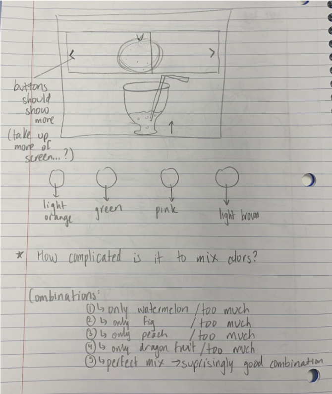
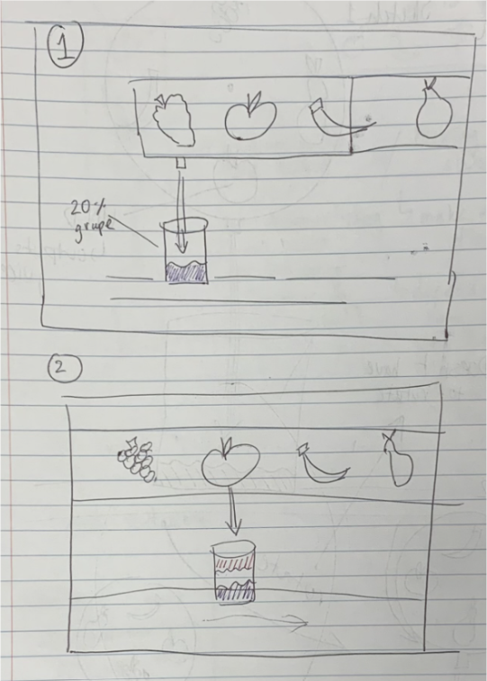
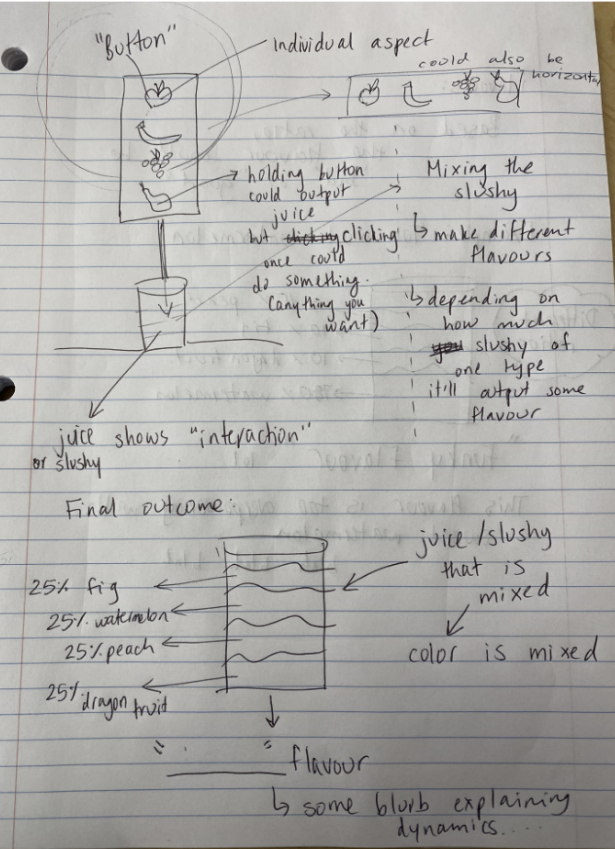
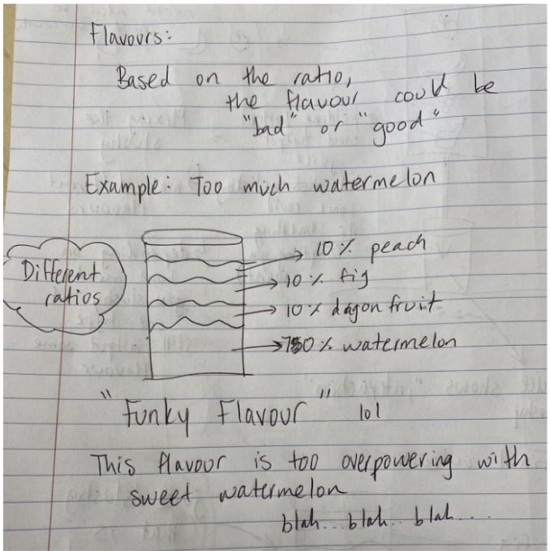
02. Juice Cup and Visual Design
In addition to my individual button, I worked on visual elements that helped communicate the user's interaction with the application. These included the juice cup, the notepad used to display descriptions, and the visual representation of the final juice mixture.
Juice Cup Design
The cup serves as a visual container for the selected flavours, helping users understand how their choices combine to create a final mixture.
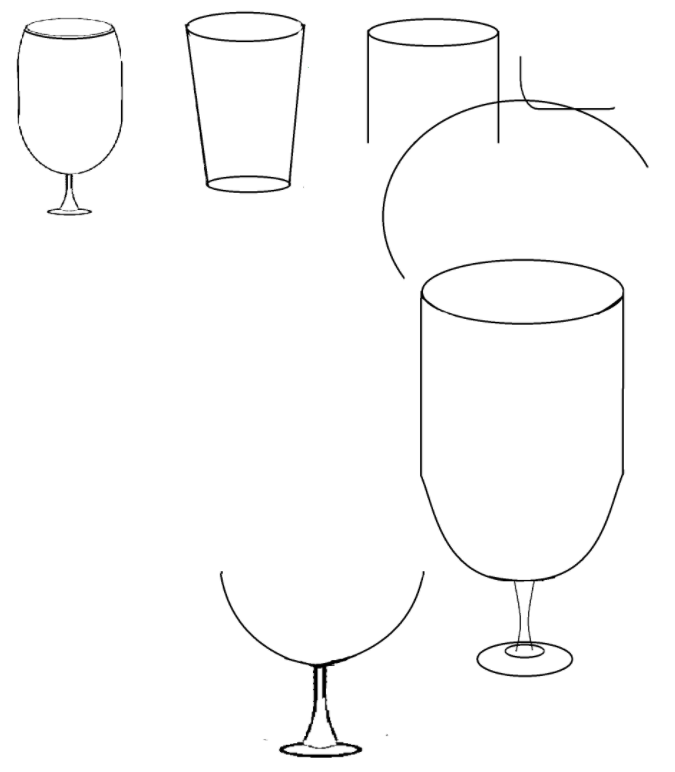
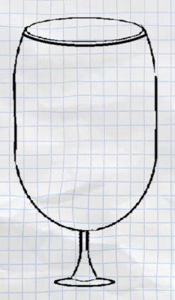
Notepad and Descriptions
I also contributed to the notepad design used to present descriptions within the interface. This element was intended to complement the hand-drawn visual direction while giving the descriptive content a distinct place on the screen.
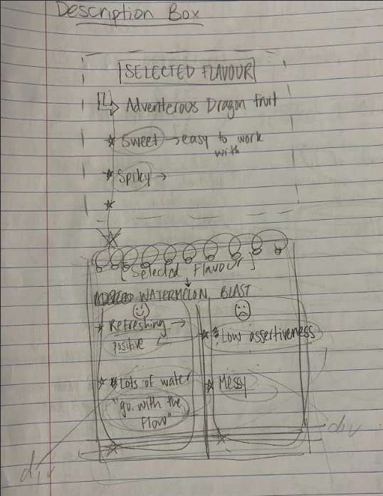
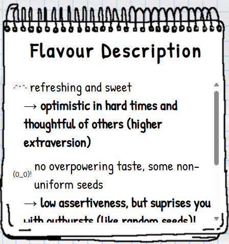
The description logic also connected each group member's contributions to the information displayed in the application. This helped link the individual fruit designs to the broader experience.
03. Implementing the Juice Layers
One of my implementation tasks involved developing the visual representation of the juice mixture inside the cup. I explored how to represent pouring and the accumulation of different flavours in a way that would fit the project's visual style.
Initial Prototype
I first created a prototype to validate the pouring concept. This allowed me to explore how the juice could be represented visually before developing a version that better matched the overall interface.
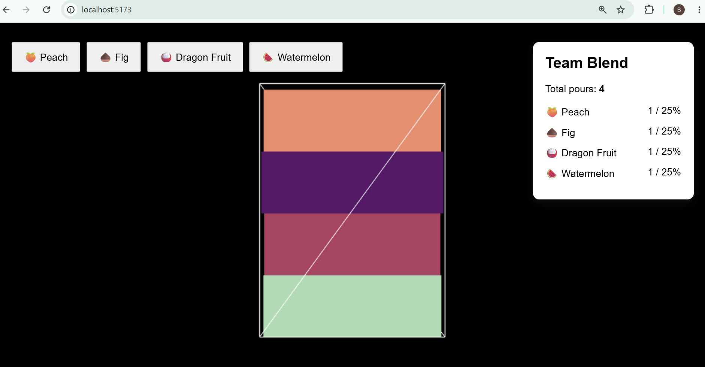
Refining the Juice Layers
After the initial prototype, I developed a more tailored representation of the juice layers. I used Microsoft Paint to draw the individual layers so that their shapes would fit neatly inside the cup.
This required multiple iterations of drawing and refinement. Rather than relying on generic shapes, I adjusted the artwork to better match the proportions of the cup and maintain the hand-drawn appearance of the interface.
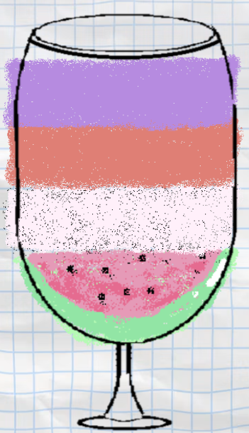
Connecting the Artwork to the Interaction
The visual artwork was only one part of the implementation. The corresponding code determines how the layers are used to represent the mixture as the user interacts with the application.
By iterating on both the artwork and its implementation, I worked toward a representation that fit the cup while supporting the intended pouring interaction.
04. Individual Button Design: Watermelon Blast
My individual button, Watermelon Blast, was designed to represent aspects of my personality through the visual characteristics of a watermelon.
Initially, I considered using other fruits, including an orange or a honeydew melon. After brainstorming different fruit characteristics, I decided that watermelon offered the most interesting connections to my personality and my Individual Typology Personality (ITP) Metric Survey results.
I explored these connections through the fruit's appearance, taste, texture, and other characteristics. The resulting design combined hand-drawn elements and cut-out-style stickers to communicate these qualities while remaining visually cohesive.
From Sketches to Design
I created four sketches to explore how the watermelon could be represented as an interactive button. These iterations helped me consider the button's shape, colours, typography, decorative elements, and interactive states.
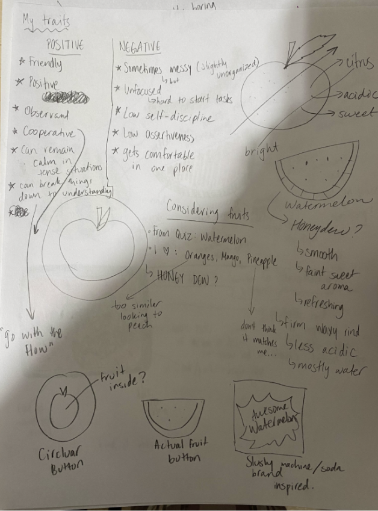
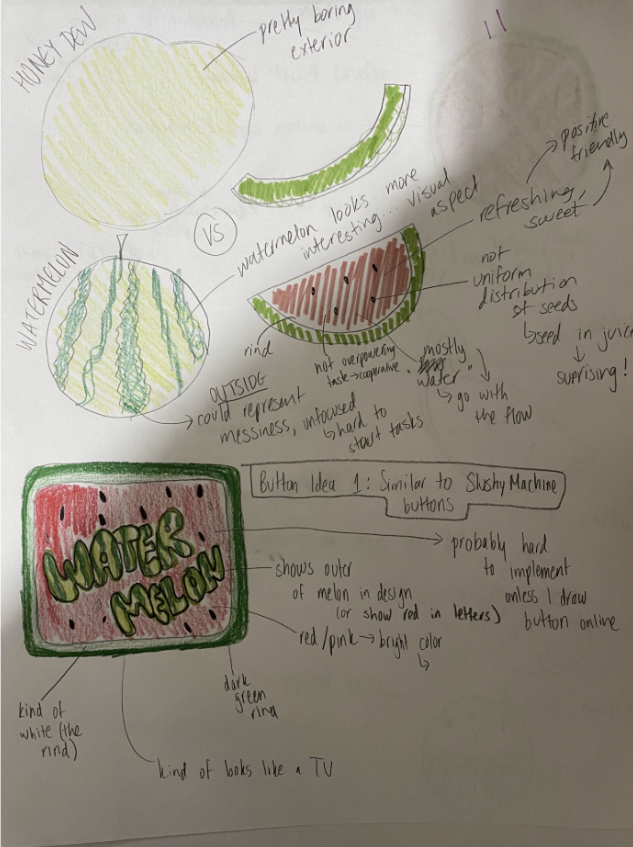
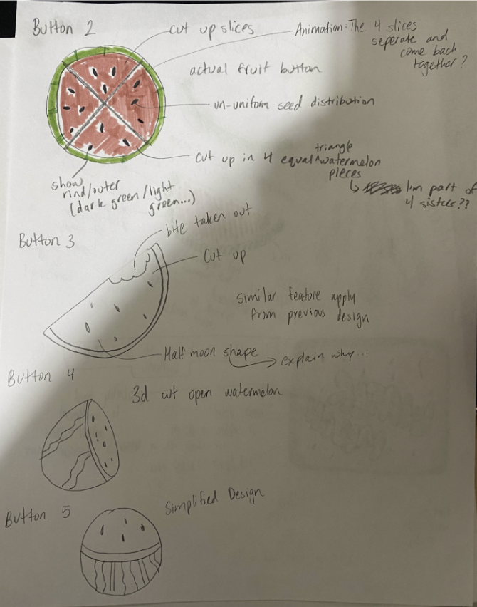
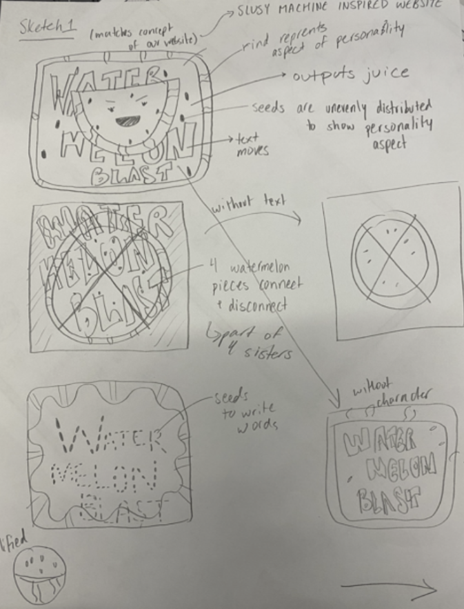
Final Button Design
For the final design, I incorporated several interactive details to bring the button to life. These included moving stickers, animated exclamation marks, and seeds that dance when the user hovers over the button.
The mixed-media appearance was intentional. I wanted the design to feel slightly unrefined and unconventional while still coming together as a cohesive component. I also incorporated a hand-drawn font that reflects my own drawing style.
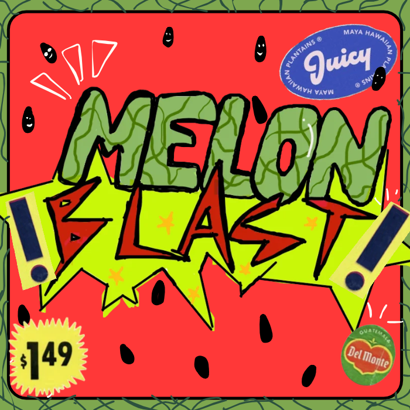
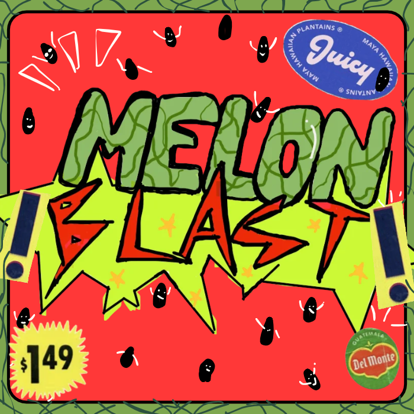
Connecting Design to Personality
The design was also an opportunity to translate personal characteristics into visual elements. I used the watermelon as a metaphor rather than relying solely on text to communicate personality.
- Sweet and refreshing taste: Connected to my relatively higher extraversion score compared with my group members, as well as my optimism and thoughtfulness.
- Mild, balanced flavour: Represented my comparatively lower assertiveness score.
- Bright red interior and seeds: Represented how I can surprise people with my work or ideas, even when I am not particularly assertive.
- High water content: Watermelon is approximately 92% water. I connected this characteristic to my tendency to go with the flow and remain calm in stressful situations.
- Irregular exterior: The watermelon-inspired border represented my occasional hesitation when starting new tasks and my slightly unorganized personality.
- Mixed-media appearance: The combination of drawings and sticker-like elements reflected a laid-back, unconventional style that can still come together as a cohesive whole.
- Hand-drawn typography: I used a lettering style similar to the way I naturally draw, making the button feel more personal.
- Smiling seeds: The playful faces revealed on hover reflected my tendency to joke around.